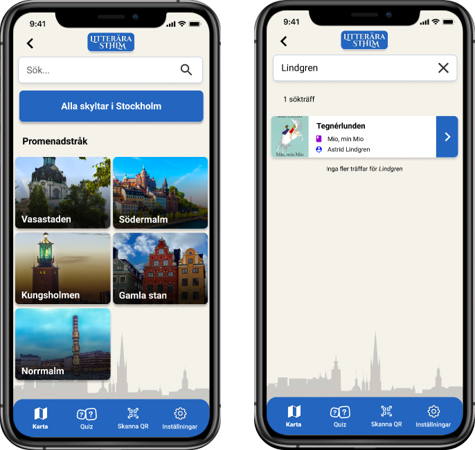
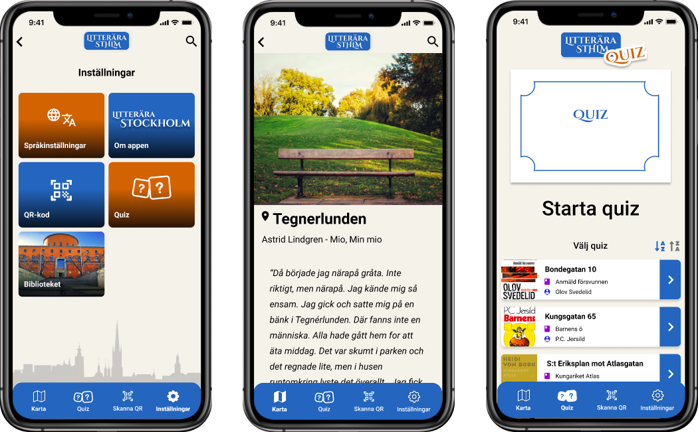

:: 1 ::
Developing this.site
HTML, CSS & JavaScript. I've used Bootstrap to wrap this site, a pretty good tool!
-
Summary: I'm the developer of this site..! And yes, it's not perfect at all but it's so fun playing around and test things. I'm making updates continuously but I wish the day had more hours so I could do it more often :-D
:: 2 ::
Prototypes for UX production
Case: Create a prototype in Figma according to a case or choice.
-
Summary: I made my own version of 1177 where I focused on being able to more easily find care units, quick access to messages and a smoother way to review their medical records, prescriptions and booked appointments.
-
Goals & results: The goal was to gather the most important (based on my own needs, no research has been done on other users) to get a more structured use of care services. If I need to find a chiropractor and book an appointment, I want to find contact information in the app and then be able to remind myself of that time in the same place. Appointments with the family doctor, dentist, etc. must also be gathered there so that I as a user do not have to think about whether I have forgotten to note any time in my regular calendar. The result was a combination of 1177 and Alltid Öppet, with a simplified way to review my recipes.
-
Challenges: One challenge was not to get caught up in the choice of design look (I love designing visual elements), the purpose here was to teach me the process and functions of Figma. It was also a challenge to predict how many frames and interactions an idea would actually result in, it often becomes more than you think.
-
Reflection: I love to prototype, it's creative and creates challenge.
:: 3 ::
Digital Compassion
With amazing Per Axbom. Creating a UX Design Manifesto. The Including Panda. BJ Fogg's Inverted Behavior Model.
-
Summary: Design ethically - as a designer you have a huge responsibility against the users you are designing for - and also those you exclude.
-
Goals & results:
-
Challenges:
-
Reflection:

:: 4 ::
Evaluation of usability - SVT Play
Case: Evaluate the service's usability & user experience.
-
Summary: The aim was to compile in groups a written report of the evaluation with a description of each method implemented and justification for how and why they were performed. The report contained insights and conclusions as well as justification for how reliable each one was.
-
Goals & results: Conclusion and recommendation after finally working with triangulation of methods and its insights was to continue the evaluation further with preference tests, card sorting, iterating the first usability test and to take the help of Google Analytics to be able to confirm patterns we found. This is to be able to develop a new version of the design and then evaluate it. The severity may be small, but our suggestion and conclusion was that SVTPlay can reduce dissatisfaction by working out disruptive elements.
-
Problem formulation: "The user does not know what the different menu choices do and what the associated icons mean."
-
Reflections & lessons learned: The main lesson came from the usability test - what insights would we have gained if we had built it in a different way? Small details can play a bigger role!
Methods:
-
Generative evaluation: Heuristic evaluation
-
Competitive benchmarking
-
Jobs to be done - mapping of needs
-
Screening survey
-
Attitude survey
-
Hypothesis
-
Cognitive walkthrough
-
Usability tests - interview, tasks & SUS
-
Evaluative evaluation: Preference test
:: 5 ::
Developing a Wordpress Theme
HTML, CSS, JavaScript & PHP.
-
Summary:
-
Goals & results:
-
Challenges:
-
Reflection:
:: 6 ::
Interaction design
Creating an app for "Litterära Stockholm"
-
Summary:
-
Goals & results:
-
Challenges:
-
Reflection:


:: 7 ::
Design with others
Learning how to design together, adapting creative collaboration methods, communication principles, design critique and feedback and stakeholder role playing.
-
Summary: "How might we design an experience that will help connect people looking for a new pet, with a new companion for them?"
-
Goals & results: The design process can be summarized with (1) external monitoring (2) qualitative interview (3) Storyboard (4) Story Curve (5) User Story Mapping (6) Design Studio -> Sketch -> Present & critique -> Converge (6) Wireframing & Design feedback with Trello Huddles.
-
Challenges: To keep the sketching real simple, knowing where to set the limits. To solve this we had to communicate a lot, making decisions, which was the purpose for this course.
-
Reflection: “It’s not about the sketches or post-its… It’s about the conversations!”
:: <3 ::
Internship @ AMF
Sketching & testing solutions: funds & value development - what do the users need for a good experience?
Prototype:
Vårdportalen
Prototyping for UX production was the name of the course - my first interactive prototype in Figma - redesigning 1177 to "Vårdportalen" :) This is an external link.
Prototype:
Portfolio in Figma
See my portfolio, designed as a prototype in Figma (external link).